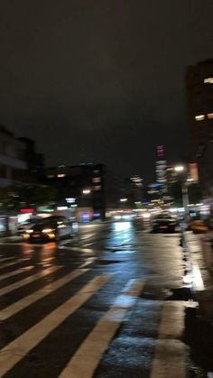
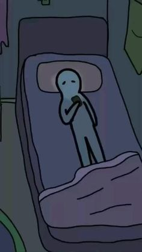

The Day I Said "No" Too Many Times: A Small Daily Regret
Axel Antonio Contreras Solorzano
© Anthony Padilla

We often think that our biggest regrets come from major decisions, from moments that mark a clear before and after. However, sometimes it’s the small, everyday choices that, over time, leave us wondering about what could have been. This is the story of how saying "no" too many times ended up distancing me from the people who mattered most.
The Small Decisions That Matter

The Invitations I Let Slip By
It all started with small excuses. One night I was tired, another I had something else to do, or I simply didn’t feel like going out. My friends’ invitations came frequently: "Let’s go out for dinner," "How about a movie?" "We’re planning a short trip, want to join?" My answer was almost always the same: "I can’t," or "Maybe next time."At first, it didn’t seem important. They understood, or at least I thought they did.
I believed there would always be another opportunity, another night to go out, another gathering to share. But gradually, the invitations became less frequent. The messages in the group chat were fewer, and when they came, I noticed I wasn’t being included in their plans.
One afternoon, while checking my phone, I realized I wasn’t receiving the same notifications anymore. Social media photos showed my friends enjoying time together, but without me. It wasn’t sudden; it was a gradual distancing, a disconnection I had created without realizing it. They didn’t drift away abruptly; they just stopped waiting for me to say "yes."
There was no big fight or harsh words. We simply grew apart. Those small decisions, those constant "no's," had created a void. And now, when I wanted to reconnect, I felt like I had lost the bridge that once connected us.
Saying "Yes" to Keep Connections Alive

One afternoon, while checking my phone, I realized I wasn’t receiving the same notifications anymore. Social media photos showed my friends enjoying time together, but without me. It wasn’t sudden; it was a gradual distancing, a disconnection I had created without realizing it. They didn’t drift away abruptly; they just stopped waiting for me to say "yes."
There was no big fight or harsh words. We simply grew apart. Those small decisions, those constant "no's," had created a void. And now, when I wanted to reconnect, I felt like I had lost the bridge that once connected us.
What About You?
Have you turned down so many invitations that, without realizing it, you drifted away from someone important? Maybe next time, saying "yes" will be more than just accepting a plan—it will be about keeping a friendship alive.